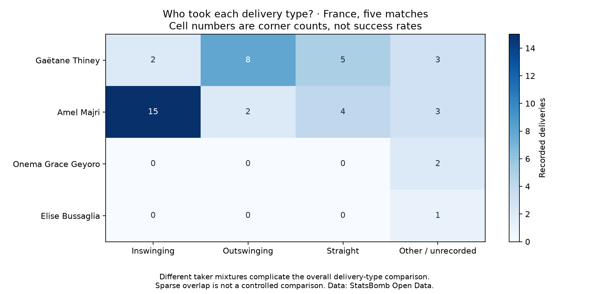

Football analyst training · Phase 2 · Lesson 40
Are we comparing the technique or the taker mix?
We now check who supplied the inswingers and outswingers before interpreting their overall rates.
Completed assignment
Majri took 15 of 17 inswingers. Thiney took eight of ten outswingers. The two technique groups therefore contain very different mixtures of players.

Confounding and overlap
Confounding: taker, opponent or situation may influence both delivery choice and outcome. The imbalance is a reason for caution, not proof of the exact cause.
Overlap: do we have examples of both techniques within a context we want to compare? Only two taker/match combinations here contain both types. Both involve Majri, with just one outswinger in each.
Thiney's 2/2 inswingers and Majri's 1/2 outswingers are tiny groups. A perfect observed fraction is not a reliable future rate, and grouping by taker does not adjust every other context.
Coach wording
“The technique rates use different taker mixtures, with sparse overlap within matches. We need more comparable examples before recommending one delivery type.”
Run 40_corner_taker_overlap.py in Spyder. It uses saved records without downloads. The heatmap's zeros mean no recorded deliveries of that category, not zero effectiveness.
The worked assignment is complete with assistance. Ask your teacher for more detail on confounding or overlap if needed.